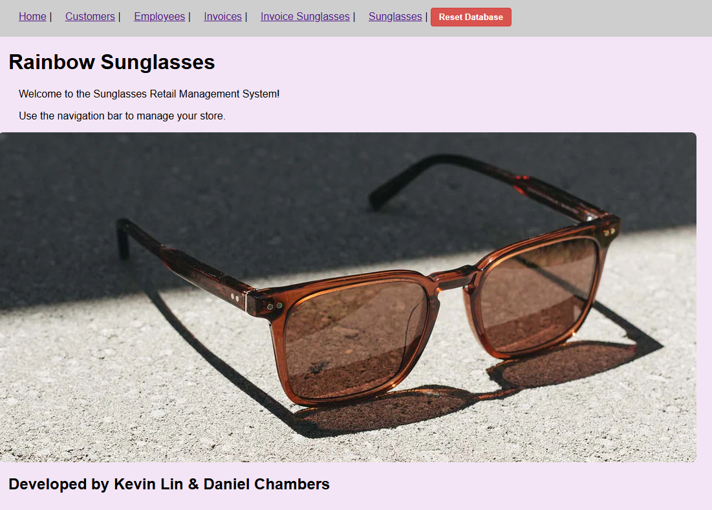
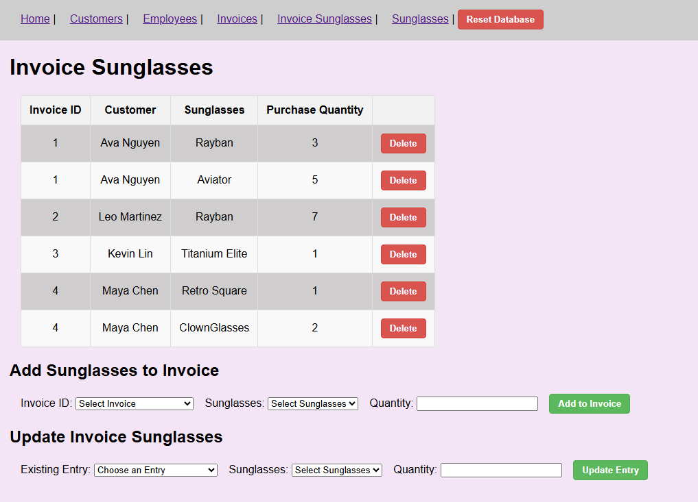
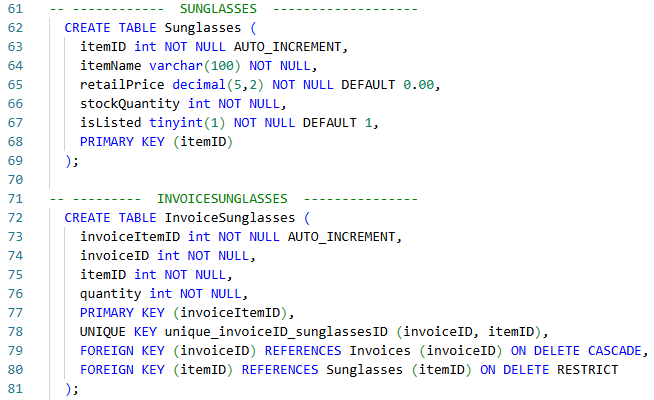
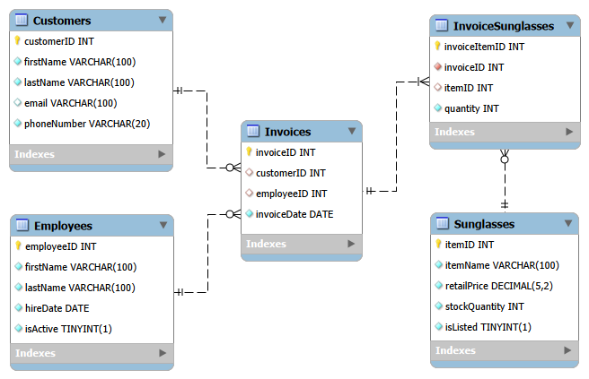

Retail Database System: Rainbow Sunglasses
Rainbow Sunglasses Management System is a full-stack web application engineered to
streamline the operations of a retail sunglasses business. The system provides a
centralized platform for managing complex relational data across five core business
entities, ensuring data integrity and efficient inventory tracking.
The application allows users to browse data, create new records, update existing records, delete applicable records,
and reset the database to its original sample data state. The project demonstrates relational database design,
CRUD operations, implementation of a many to many relationship, and deployment of a working database backed website.
Core Entities & Data Modeling
- Customers: Maintains contact records and tracks historical purchase associations.
- Employees: Manages internal staff records and hire information.
- Invoices: Serves as the primary purchase record, establishing a relationship between customers and the fulfilling employee.
- Sunglasses: Tracks inventory specifics including price points, stock quantities, and sale status.
- InvoiceSunglasses (Intersection Table): Implements a many-to-many relationship to map specific inventory items to individual invoices.